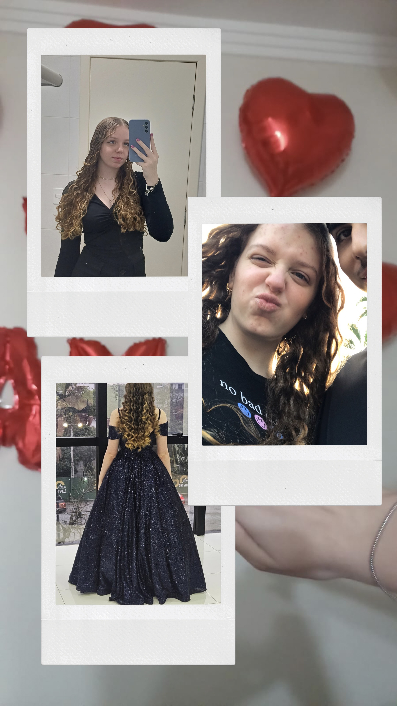
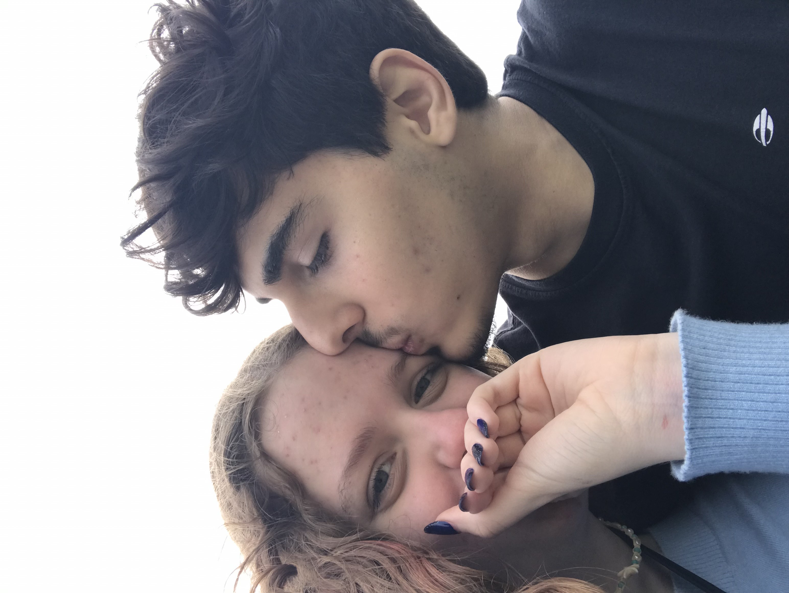
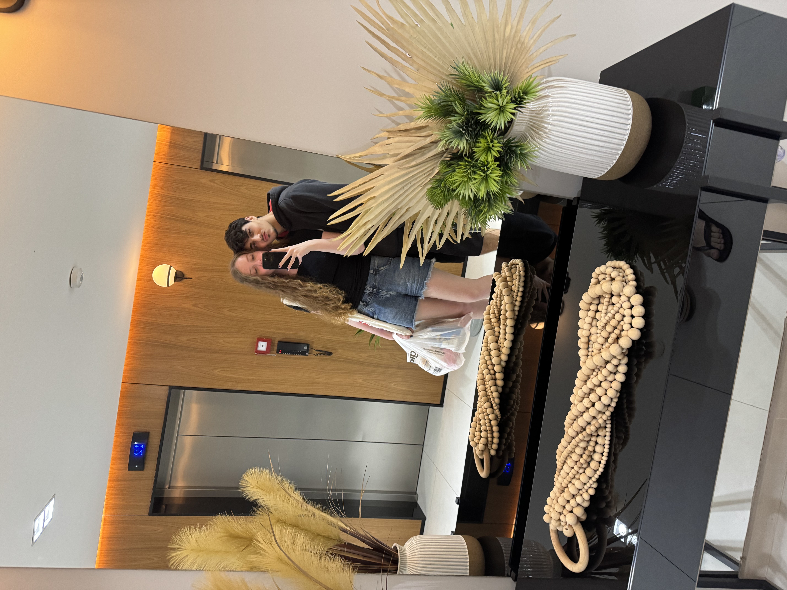

E nos conseguimos, EUTEAMO meu nenem

Assim... sei que faz mais de um mes mas esse momento nunca vai pasar em branco e vida, ate hoje não sei descrever a sensação que foi ver voce com o ursinho

E acho que uma das melhores fotos pra nos definir e essa, não importa de e facil ou dificil nos sempre estamos um ao lado do outro, e principalmente estamos dispostos a melhorar... lembro daquela quinta que ficamos horas ensaiando o pulo, foi incrivel poder testar e mudar o pulo varias vezes mas no final... foi perfeito e nos conseguimos

Esse domingo... sinceramente eu te amo mais que tudo, na festa foi incrivel mas em casa poder te ver com esse vestidão e so agente quietinho não conseguir segurar, eu vi a princesa que eu tenho o mulherão que eu me orgulho em dizer que e a minha namorada

Mais um domingo que eu fiquei igual um bobo, meu nenem aparaceu com a blusinha mais fofa desse mundo

O nosso presentinho de 6meses, esse deu trabalho e foi corrido, durante a semana tava meio corrido pra ir comprar as coisinhas... ai eu acordei sabado bem cedinho fui na lojinha "que nos precisamos ir juntos um dia" comprei as coisinhas e eu lembro que foi a minha tadinha toda fazendo, testei i glitter e eu lembro que fui mimir era quase 3:20, mas cara.... caleu a pena cada segundo, cada pontinho de cola e todas as vezes que pensei em desisitr mais continuava, meu nenem ganhou um presentinho que esse sim... e unico e sempre vai estar com nos

Esse diazinho meu nenem tava tistinho meio pa baixo, a vontade era de dar um abraço com longo na minha pequena, e eu lembro que ela foi take o showerzinho dela e eu fiz essa surpresinha do meu nenem

Aqui foi pra mostrar que o meu nenem e linda, e perfeita, tem a carinha mais linda desse mundo e que alem de tudo e o meu nenem, e a piquininha que todos os dias vem me buscar as 7 da manha e fica agarridinha no meu bracinho, o nenemzinho que adora dormir juntinho nas tardes do fim de semana e que ate ronca deitadinha em mim

E o sonho da praia foi realizado, não e que passei o dia na praia com o meu nenem, a liberdade de poder andar com o meu nenemzinho, ver o mar juntinho e ir pela primeira vez tomar sorvete juntinhos, mas e claro não poderia faltar "BEIJA PORRRA" esse dia eu tenho certeza que vamos lembrar pra sempre

My baby de cabelinho vermelho gente... esse dia foi incrivel

A ideia não era muito bem meu nenem saber que eu iria tirar a foto, queria fazer uma surpresinhae tirar a foto sem o meu napolitano perceber e postar ela, ainda vou ver a sua carinhade boba vendo que postei uma foto sua sem voce perceber
Um dos nossos encontros no meio da semana mais aleatorios de todos e sinceramente um dos mais incriveis, como foi bom joga papo fora em quanto estavamos juntinhos na piscina

E eu pude pentear o cabelo do meu nenem, sinceramente não sei falar a sensação mas e incrivel e mo por mim eu ficaria o dia inteiro mexendo no seu cabelo, mas finalizar ele... pra mim e um momento incrivel mas ver a sua carinha de boba, escutar meu nenem falando que eu pego o jeito rapido e aquela carinha sem acreditar no que ela ta vendo vale mais que qualquer coisa

Meu nenem no meu colinho e as suas mechinhas coisinha mais fofaaaa dese mundo

Eu finalizando o cabelinho do meu nenem, não falei nada mas tava tão concentrado em deixar a minha princesa mais linda do que ela ja e que nem percebi meu nenem tirando essa foto
Meu nenem na rede gente, "precisamos ficar juntinhos assim mais vezes

E... meu nenem ficou mais boba que eu na nossa primeira volta de barco, a pequena sem acreditar que era real

A carinha de bobinha da minha princesinha genteeee

Nos e o nosso eterno companheiro kkkkk so faltou uma foto com todo mundo junto, mas assim nos fechamos com chave de ouro mais um mez juntinhos e vida tem sido incrivel acordar todos os dias e receber o seu bom dia, ir pra escola comecou a ter um som diferente, sair no final do seu lanche e uma sensação incrivel aqueles abraços, e mo... vou falar algo que mudou. hoje eu passei por baixo justamente em uma terça-feira e olhei pro mesmo cantinho que sempre olho e imaginei meu nenem la... ela me olhando com aquele sorrizo e balançando a maozinha pra mim, e ao mesmo tempo eu fique feliz por um motivo. Era incrivel te ver ali deposi da aula mas hoje eu fique fwliz por saber que meu nenem agora tem tempo,meu nenem pode descansar de tarde, a piquininha ta feliz de verdade e mo EUTEAMO obrigada por estar do meu lado e sempre por ficar feliz pelas minhas conquistas, eu realmente achei alguem que valorizada cada coisinha que eu faça e fica mais feliz ate que eu por ter conseguido. Mo voce e incrivel